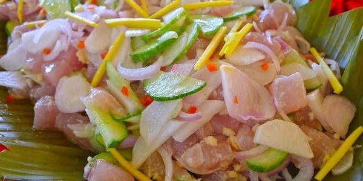
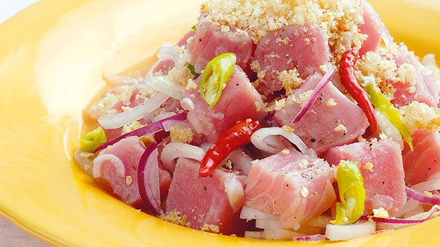
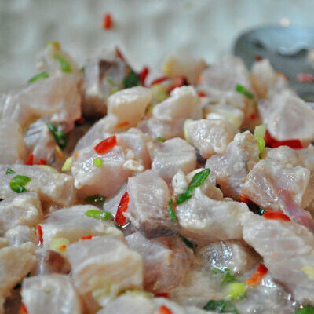

Kinilaw na Isda is a traditional Filipino dish made from raw fish that is marinated in vinegar, creating a unique and refreshing flavor. The dish typically uses freshly caught fish such as tuna or tanigue, combined with ingredients like onions, ginger, chili, and calamansi. The acidity of the vinegar acts as a natural cooking agent, firming the fish without the need for heat. In Surigao del Sur, the dish is enhanced by the use of coconut vinegar, which gives it a distinct local taste. The combination of sour, spicy, and savory flavors makes it a well-balanced and enjoyable dish.
The Surigaonon style of kinilaw stands out due to its freshness and use of locally sourced ingredients. It is often served chilled, making it especially refreshing in the tropical climate. The dish is commonly eaten as an appetizer or paired with rice as a main meal. Its preparation emphasizes simplicity while highlighting the natural taste of the seafood. Visitors often find the dish both exotic and flavorful. Overall, kinilaw is a key representation of coastal Filipino cuisine.


Kinilaw originated in the Philippines long before the arrival of Spanish colonizers, making it one of the oldest recorded Filipino dishes. Early coastal communities developed this method as a way to preserve and safely consume raw fish using vinegar. The dish reflects the ingenuity of indigenous people in utilizing natural ingredients for food preparation. Over time, different regions created their own variations based on available resources. The Surigaonon version developed its identity through the use of coconut vinegar and local spices.
In Surigao del Sur, kinilaw became a staple dish due to the abundance of fresh seafood. It is often prepared during gatherings, celebrations, and daily meals. The dish has remained popular because of its simplicity and nutritional value. Modern versions sometimes include additional ingredients, but the traditional method is still widely practiced. Today, kinilaw is recognized as a cultural and culinary symbol of the region.
Kinilaw uses fresh seafood as its main ingredient, typically tuna or similar fish. Vinegar, especially coconut vinegar, is essential for the marination process. Additional ingredients include onions, ginger, chili, and calamansi juice. Salt is added to enhance flavor. These ingredients create a balanced taste.
The freshness of the fish is crucial for safety and flavor. Spices and herbs contribute to its distinctive aroma. Calamansi adds a citrusy taste that complements the vinegar. The combination creates a refreshing dish. Each ingredient plays an important role in the final outcome. Overall, the ingredients are simple yet effective.


To prepare kinilaw, fresh fish is first cleaned and cut into small pieces. Vinegar is added to the fish and left to marinate. The acidity begins to cook the fish. After a few minutes, excess vinegar may be drained. Additional ingredients such as onions, ginger, and chili are mixed in.
Calamansi juice and salt are added for extra flavor. The mixture is gently stirred to combine all ingredients. The dish is usually served immediately or chilled. It is best enjoyed fresh to maintain its quality. Preparation is quick and does not require cooking. Overall, the process is simple and efficient.